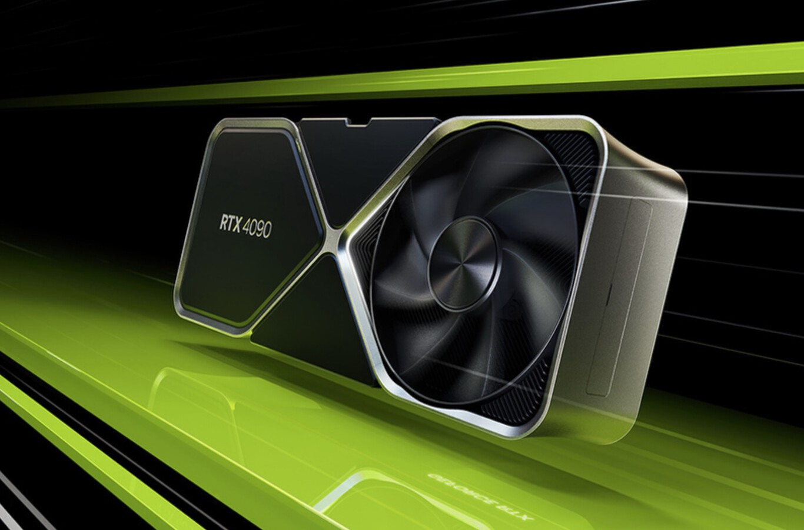
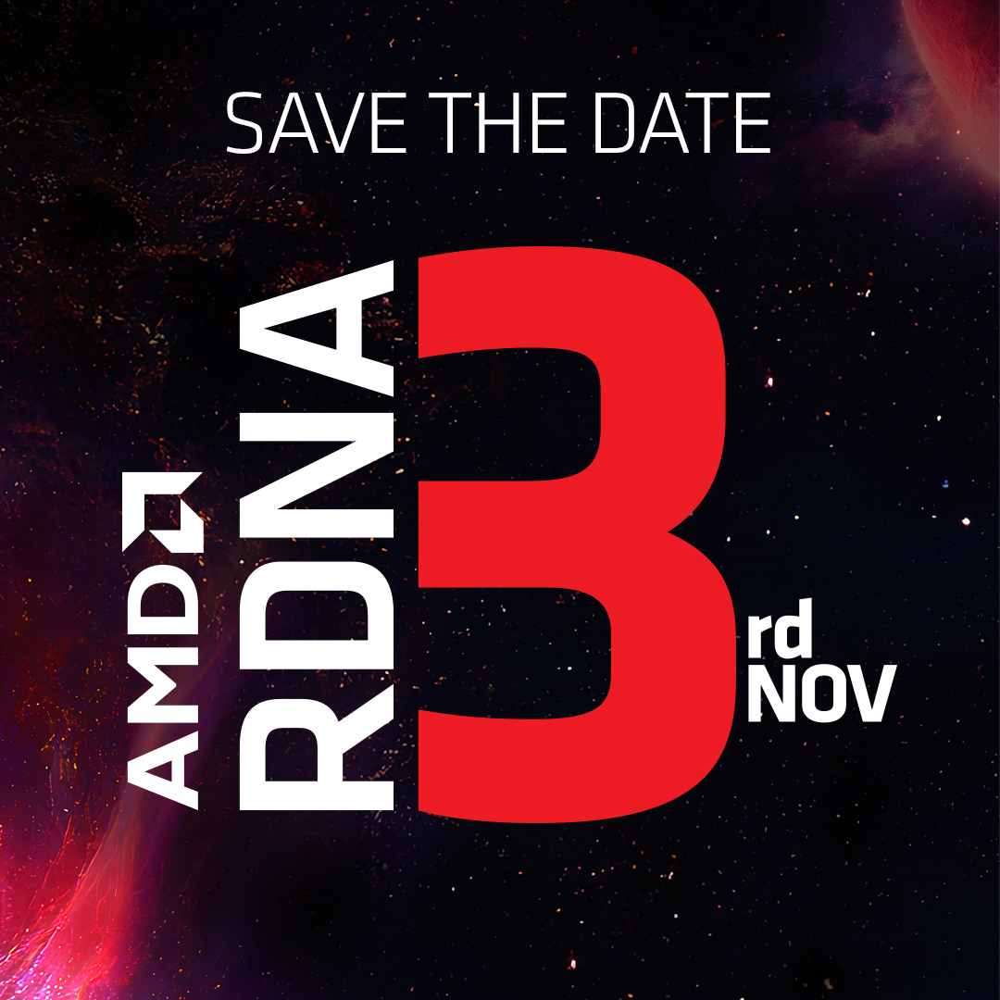
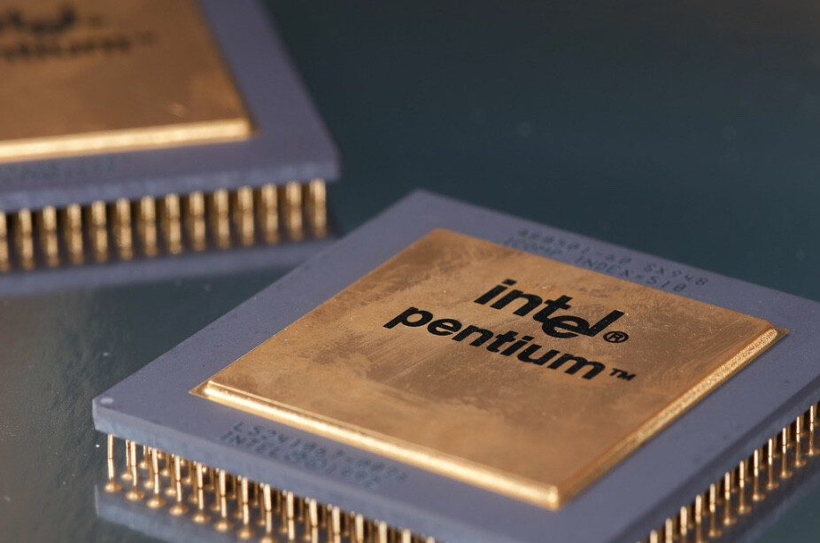

Nvidia anunció este martes su nueva generación de placas de video, las GeForce RTX 40 Series, con la 4090 y 4080 como sus dos nuevos modelos basados en la arquitectura de próxima generación Ada Lovelace. El nombre es un honor a la matemática inglesa del siglo XIX, que hizo aportes significativos a las ciencias de la computación y está considerada por muchos como la primera programadora de la historia.
Nvidia anunció su nueva generación de placas de video: RTX 4090 y 4080

AMD lanzará las gráficas Radeon RX 7000 Series el 3 de noviembre

La marca que dirige Lisa Su ha anunciado ya fecha de lanzamiento de las primeras GPU con arquitectura RDNA 3 a pesar de que aún no las ha presentado de forma oficial.
Intel dejará de utilizar las míticas marcas Pentium y Celeron

Tras casi tres décadas, Intel abandonará las míticas marcas Pentium y Celeron para sus nuevos procesadores. Así lo ha apuntado en un comunicado Josh Newman, VP de Intel y director general de plataformas móviles de la compañía estadounidense.